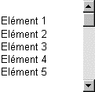

Sous Windows, un ascenseur se présente sous la forme d'une zone rectangulaire, verticale ou horizontale, à l'intérieur de laquelle se déplace un curseur. Une flèche occupe chacune des deux extrémités :
Remarque : Nous nommerons les deux zones intermédiaires zones de déplacement "page".
Dans une fenêtre écran :
Un ascenseur horizontal est affiché lorsque le masque présenté est plus large que la fenêtre. Il commande le déplacement des objets, à droite ou à gauche, permettant ainsi la visualisation du masque complet.
De la même manière, un ascenseur vertical est affiché lorsque le masque est plus haut que la fenêtre. Il commande alors le déplacement des objets vers le bas ou vers le haut.
Ces ascenseurs sont gérés automatiquement par le système et le programmeur n'y a pas accès.
Dans un tableau :
Un ascenseur horizontal est affiché lorsque la largeur totale des colonnes dépasse la largeur du tableau lui-même. Il commande le déplacement des colonnes, à droite ou à gauche, permettant ainsi la visualisation du tableau complet. Cet ascenseur est géré automatiquement par le système et le programmeur n'y a pas accès.
L'ascenseur vertical permet, lorsque la totalité des lignes du tableau ne peut pas être affichée, de faire défiler le contenu vers le bas ou vers le haut.
C'est ce type d'ascenseur qui nous servira d'exemple par la suite.
Exemple :
Pour clarifier la présentation, nous considérerons l'exemple précis d'une liste comprenant 23 éléments, présentée dans un tableau affichant 5 lignes (c'est à dire qu'on affichera 5 lignes de la liste par "page"). Le schéma suivant présente l'affichage initial :
